Five moves: distinguish $P(Y|X)$ from $P(Y|do(X))$, use SNPs as instrumental variables, 2SLS to recover the causal effect, test IV assumptions with MR-Egger / MR-PRESSO, cis-MR to validate drug targets.
Learning objectives
- Distinguish association from causation; explain why naive observational studies cannot establish causality and what assumptions can rescue them.
- Define an instrumental variable (IV); state the three core MR assumptions (relevance, independence, exclusion restriction); recognise when each fails.
- Run a two-sample Mendelian randomisation analysis: from GWAS summary statistics → MR-IVW estimate → MR-Egger sensitivity test → reported causal effect.
- Detect and adjust for horizontal pleiotropy via MR-Egger, MR-PRESSO, weighted median, and the Steiger directionality test.
- Apply mediation analysis to decompose direct and indirect effects.
- Interpret causal effect estimates with calibrated uncertainty; recognise when conclusions are too strong.
- Frame causal inference in EE terms: causal effect as a partial derivative under intervention; confounding as colour bias in regression; instrumental variables as a 2SLS estimator.
Part 1 · 25 min Causation vs Correlation in Genomics
1.1 The interpretation problem
A GWAS hit at SNP $X$ associated with disease $D$ tells you:
$$P(D = 1 \mid X = 1) > P(D = 1 \mid X = 0).$$
It does not tell you whether changing $X$ would change $D$. Three explanations are consistent with the same association:
- Direct causation: $X \to D$ (the SNP affects the disease).
- Reverse causation: $D \to X$ (less common for germline SNPs but matters for somatic).
- Confounding: a third variable $C \to X$ and $C \to D$ (population structure, age, etc.).
For somatic genomics, time-ordering rules out (2). For germline, time-ordering also helps (genotype is fixed at birth, before disease). But confounding via population structure remains the major confounder, partly addressed by GWAS PCA correction.
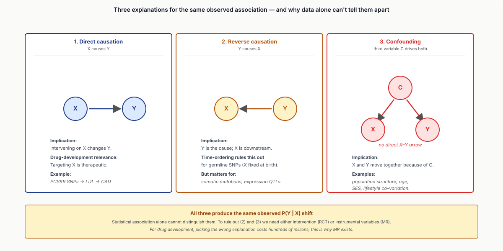
1.2 Why this matters for translation
Suppose GWAS finds: SNPs in the FTO gene → BMI. Three possible interpretations:
- Druggable: FTO inhibitors would reduce BMI (causal).
- Reverse: BMI somehow alters genotype (impossible — germline).
- Confounded: FTO is co-inherited with another causal variant; FTO itself is innocent.
For drug development, the difference is everything. We need a tool to distinguish.
1.3 The randomised controlled trial gold standard
The gold standard for causal inference: randomly assign $X$ across patients; compare outcomes. RCTs eliminate confounding by design — randomisation breaks the $C \to X$ link.
Limitations:
- Expensive (hundreds of millions of dollars).
- Slow (years).
- Often unethical (can't randomise people to known-harmful exposures).
- Sometimes infeasible (can't randomise a gene's lifelong expression level).
We need a substitute for RCTs in genomics.
1.4 Mendelian Randomisation: nature's RCT
MR (Davey Smith & Ebrahim 2003): use germline SNPs as instrumental variables for an exposure of interest.
The argument:
- Germline genotype is randomly assigned by Mendel's laws (parental allele frequencies).
- Therefore, individuals with different SNPs effectively received different "doses" of the gene's product, randomly.
- If those individuals have different disease rates, the gene must be causally affecting the disease.
It's an RCT randomised by Mendel rather than by a researcher.
1.5 The deep dive
Part 2 · 30 min Instrumental Variables and 2SLS
2.1 The IV concept
An instrumental variable $Z$ is a variable that:
- Affects $X$ (the exposure of interest).
- Affects $Y$ (the outcome) only through $X$.
- Is independent of confounders $C$ between $X$ and $Y$.
If you have such a $Z$, you can recover the causal effect $\partial Y / \partial X$ even from observational data.
2.2 The Wald estimator
The simplest IV estimator:
$$\widehat{\beta}_{X \to Y} = \frac{\widehat{\beta}_{Z \to Y}}{\widehat{\beta}_{Z \to X}}$$
The "Wald ratio". Numerator: the effect of the IV on the outcome (estimable from data). Denominator: the effect of the IV on the exposure. Their ratio gives the causal effect of $X$ on $Y$.
Intuition: if a unit change in $Z$ moves $X$ by 0.5 and moves $Y$ by 0.3, then a unit change in $X$ (driven by $Z$) moves $Y$ by 0.6. The change-in-$Y$-per-change-in-$X$ ratio is the causal effect.
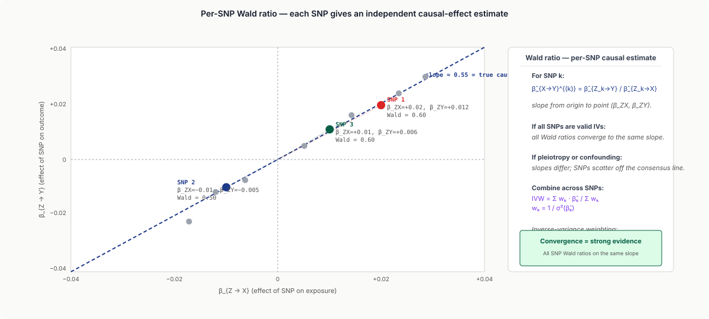
2.3 Two-stage least squares (2SLS)
Generalises the Wald estimator to multiple instruments + multiple confounders:
Stage 1: Regress $X$ on the instrument $Z$ (and any controls $W$):
$$X = \pi_0 + \pi_1 Z + \mu W + e.$$
Get fitted $\widehat{X}$.
Stage 2: Regress $Y$ on the fitted $\widehat{X}$ (and controls):
$$Y = \beta_0 + \beta_1 \widehat{X} + \gamma W + u.$$
$\beta_1$ is the causal-effect estimate. The trick: $\widehat{X}$ is the part of $X$ predicted by $Z$, which (under the IV assumptions) is uncorrelated with confounders.
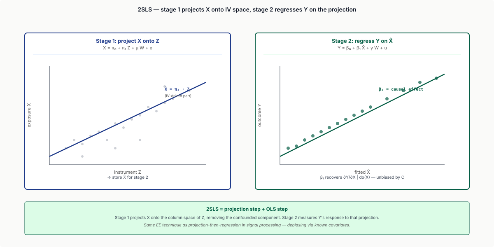
2.4 The three core IV assumptions
1. Relevance: $Z$ predicts $X$. Quantified as the F-statistic of the first-stage regression. F < 10 → "weak instrument", inflated bias.
2. Independence (exchangeability): $Z$ is independent of confounders between $X$ and $Y$. For germline SNPs, generally satisfied if you adjust for population structure (PCA).
3. Exclusion restriction: $Z$ affects $Y$ only through $X$. The hardest to verify. If $Z$ has a direct path to $Y$ that doesn't go through $X$, the IV is invalid.
The hardest in practice. For SNPs as IVs: the SNP might affect $Y$ through pathways other than the gene of interest (horizontal pleiotropy).
2.5 Pleiotropy and its types
A SNP affecting multiple traits is pleiotropic:
- Vertical pleiotropy (OK): SNP → $X$ → $Y$ → other traits. The IV assumption is fine.
- Horizontal pleiotropy (NOT OK): SNP → $X$, SNP → $Y$ via independent paths. Violates exclusion restriction.
MR's assumption: most SNPs only affect $X$ on the way to $Y$. With many SNPs, deviations from this can be detected statistically (Part 3).
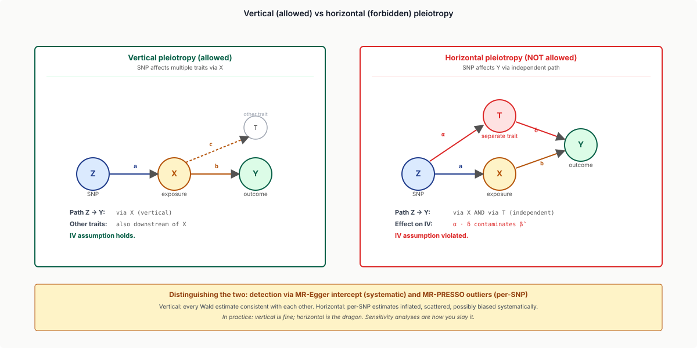
2.6 The deep dive
Part 3 · 40 min MR Methods and Sensitivity Analyses
3.1 Two-sample MR
The most common modern setup: two-sample MR.
- Sample 1: gives summary stats $\widehat{\beta}_{Z \to X}$ (e.g., from a GWAS for the exposure).
- Sample 2: gives $\widehat{\beta}_{Z \to Y}$ (e.g., from a GWAS for the outcome).
- The samples can be entirely separate cohorts.
- Estimate the causal effect via Wald or its multi-instrument generalisation.
Enormously efficient: GWAS summary statistics for thousands of phenotypes are publicly available. Two-sample MR can be done with no individual-level data access.
3.2 Inverse-variance weighted (IVW)
The standard MR estimator with multiple instruments:
$$\widehat{\beta}_{IVW} = \frac{\sum_k w_k \cdot (\beta_{Z_k \to Y} / \beta_{Z_k \to X})}{\sum_k w_k}$$
where $w_k = (\sigma^2_{\beta_{Z_k \to Y}})^{-1}$ (inverse variance weights). This is the meta-analysis of per-SNP Wald estimators. Tighter SNPs (smaller standard error) get higher weight.
If all SNPs are valid instruments, IVW is consistent and minimally biased. But it's sensitive to invalid instruments — even one bad SNP can bias the estimate.
3.3 MR-Egger
MR-Egger (Bowden 2015): allows systematic horizontal pleiotropy by estimating an intercept.
If all SNPs have a small systematic effect on $Y$ that doesn't go through $X$, the Wald-ratio plot has a non-zero intercept. The Egger regression:
$$\beta_{Z_k \to Y} = \alpha + \beta \cdot \beta_{Z_k \to X}.$$
- Slope $\beta$: causal effect estimate (corrected for systematic pleiotropy).
- Intercept $\alpha$: estimate of average pleiotropy. $\alpha = 0$ → no systematic pleiotropy.
If $\alpha \neq 0$ significantly: pleiotropy is present; IVW is biased; trust the Egger slope. If $\alpha \approx 0$ but Egger slope is far from IVW: instrument-specific outliers; MR-PRESSO might help.
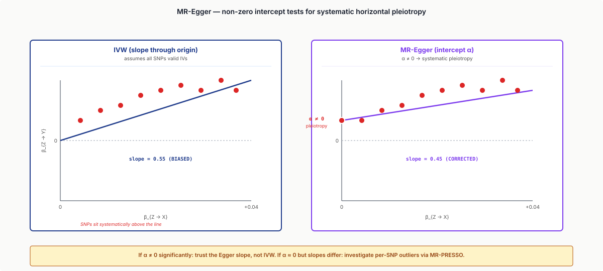
3.4 MR-PRESSO and weighted median
MR-PRESSO (Verbanck 2018): outlier-detection-based MR. Identifies and removes individual SNPs whose Wald ratio is inconsistent with the consensus.
Workflow:
- Run IVW.
- Compute per-SNP residual = (Wald estimate − IVW estimate)².
- Test each SNP's residual for significance.
- Remove outliers; re-estimate IVW.
Weighted median (Bowden 2016): consistent if at least 50% of instrument weight is from valid SNPs. More robust to outliers than IVW.
For a careful MR analysis: report IVW + MR-Egger + weighted median + MR-PRESSO. Convergence across methods → confidence; divergence → flag for caution.
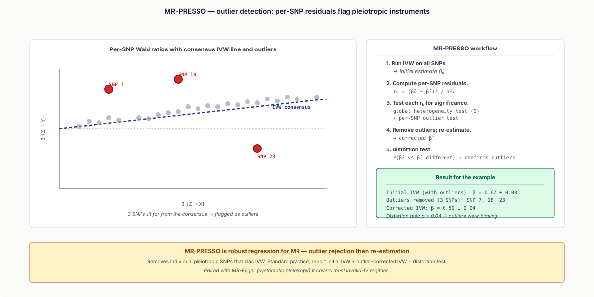
3.5 The Steiger directionality test
A causal claim should also pass directionality: $X \to Y$ and not $Y \to X$.
Steiger test (Hemani 2017): for each candidate IV, compute "is the instrument's effect on the exposure stronger than its effect on the outcome?". If yes for most IVs, the causal direction is established.
Useful for cases where reverse causation is plausible (e.g., is BMI affecting depression, or vice versa?).
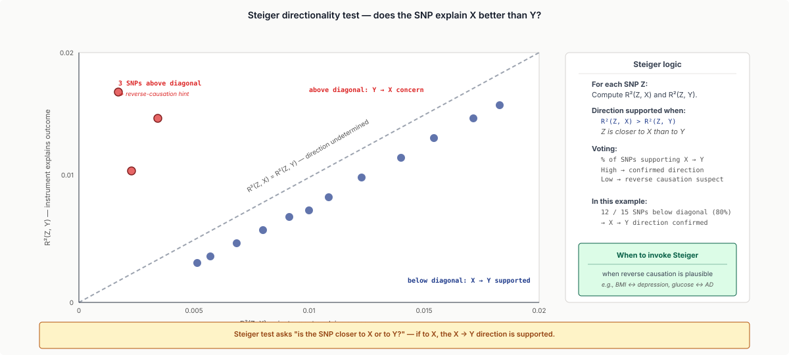
R²_ZY), supporting that direction. A few outliers below the diagonal indicate reverse-direction concern. Annotation: the Steiger test directionality is asymmetric.">3.6 Multiple-testing in MR
For "MR-PheWAS" — testing one exposure against many outcomes — multiple testing matters. Apply BH FDR or Bonferroni at the per-outcome level.
3.7 Worked example
A canonical MR study: LDL cholesterol → coronary artery disease.
- Instruments: 100 LDL-associated SNPs (mostly in lipid metabolism genes).
- Exposure GWAS: GIANT consortium LDL.
- Outcome GWAS: CARDIoGRAMplusC4D coronary disease.
- Two-sample MR-IVW: $\beta = 0.55$ per SD LDL (95% CI 0.45-0.65).
- MR-Egger intercept: ~0 (no systematic pleiotropy).
- Conclusion: strong causal evidence for LDL → CAD. (This was the basis of the PCSK9-inhibitor drug development pathway.)
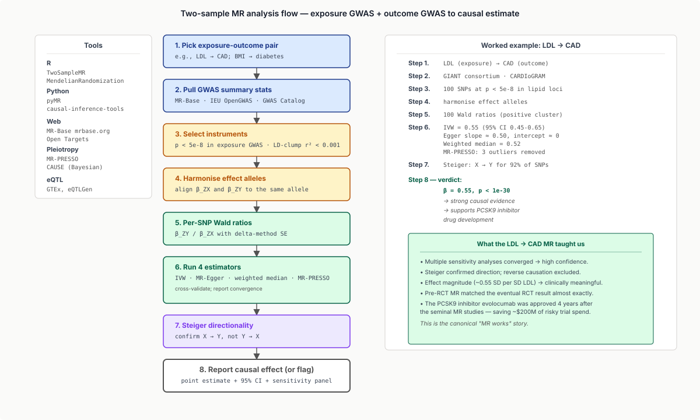
Part 4 · 25 min Mediation Analysis
4.1 The mediation question
Even if $X$ causes $Y$, the mechanism matters:
- Direct effect: $X \to Y$ (immediate).
- Indirect effect: $X \to M \to Y$ (mediated by $M$).
For drug development, mediator $M$ might be the actionable target. For pharmacology, knowing $M$ tells you which downstream pathway to target instead.
4.2 Baron-Kenny mediation
The classical (Baron & Kenny 1986) test:
- Regress $M$ on $X$: significant?
- Regress $Y$ on $X$: significant?
- Regress $Y$ on $X$ + $M$: $X$'s coefficient should attenuate.
If yes to 1, 2, and attenuation in 3 → $M$ mediates. This is the entry-level method. Modern mediation uses more rigorous frameworks.
4.3 Counterfactual mediation
VanderWeele's framework (2014, 2015): decomposes total effect into:
- Natural direct effect (NDE): effect of $X$ on $Y$ when $M$ is held at its baseline value.
- Natural indirect effect (NIE): effect of $X$ on $Y$ via $M$ (when $X$ changes from baseline to exposure).
The total effect = NDE + NIE. This decomposition requires no-unmeasured-confounder assumptions for both $X$-$Y$ and $M$-$Y$. Strong but standard in modern mediation analysis.
4.4 Two-step MR for mediation
Combine mediation with MR:
- Estimate causal effect of $X$ on $M$ via MR (using SNPs for $X$).
- Estimate causal effect of $M$ on $Y$ via MR (using SNPs for $M$).
- Combine: indirect effect = effect₁ × effect₂.
This is robust to confounders that would invalidate Baron-Kenny mediation. Used in modern epidemiology to test pathway hypotheses.
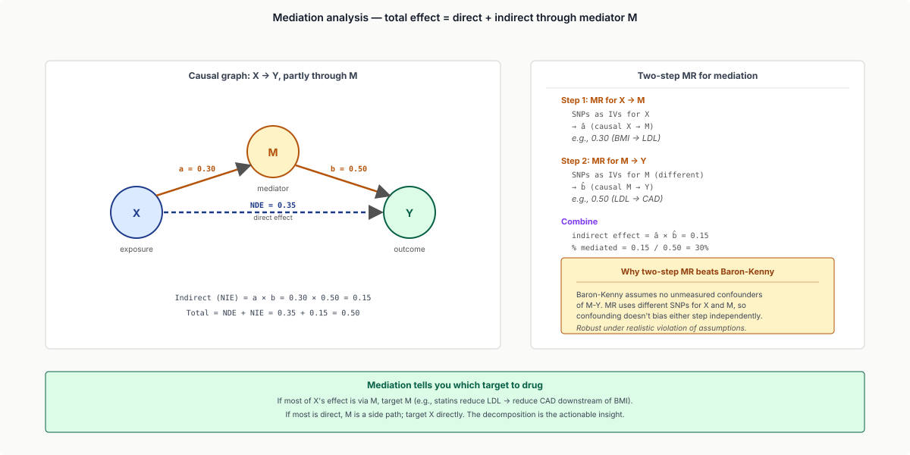
4.5 Worked example
A canonical study: BMI → coronary artery disease, mediated by LDL.
- MR for BMI → LDL: positive, modest.
- MR for LDL → CAD: positive, strong.
- Combined indirect effect: explains ~30% of BMI's CAD effect.
- Direct (non-LDL) effect of BMI: 70%.
Conclusion: most of BMI's CAD risk goes through pathways other than LDL; targeting LDL alone won't fully neutralise BMI's effect.
Part 5 · 25 min Limitations, Pitfalls, Best Practices
5.1 Weak instruments
If individual SNPs explain little of the exposure variance (low $\beta_{Z \to X}$), the Wald ratio has wide standard error → biased toward the null in two-sample MR.
Standard fix: use multiple instruments to combine. F-statistic > 10 across instruments is the rule of thumb. Below 10, results are unreliable. For exposures where no genome-wide-significant SNPs exist, consider polygenic-score-based MR or skip MR entirely.
5.2 Pleiotropy
The biggest threat to MR validity. SNPs in lipid-related regions tend to affect multiple lipid traits, body composition, kidney function, etc. Most are vertically pleiotropic; some are horizontally pleiotropic.
Mitigation:
- Pre-screen instruments for known pleiotropy (HLA region notorious; exclude).
- Use multiple sensitivity analyses (MR-Egger, weighted median, MR-PRESSO).
- Report convergence; flag divergence.
5.3 Population structure
Subtle population stratification can violate IV assumptions. Always:
- Use within-ancestry GWAS summary stats (don't mix Europeans + East Asians).
- Adjust for population structure in the GWAS itself (PCA correction).
- Run MR within ancestry strata; meta-analyse if needed.
5.4 Selection bias
If SNPs predict survival (e.g., severely disease-causing alleles cause early death), the population sampled in the GWAS is unrepresentative. This biases MR estimates. Mitigation: avoid MR for traits where genotype-conditional survival differs strongly.
5.5 The non-RCT-equivalent caveat
MR estimates the lifetime average effect of the exposure, not the effect of an immediate intervention. A drug that lowers LDL for 5 years may have a different effect than 50 years of lifetime variation in LDL.
→ MR confirms causality and rough magnitude, but doesn't directly substitute for RCT in dose-response or temporal-window questions.
5.6 The 2024 frontier
- MR-CAUSE (Morrison 2020): Bayesian MR robust to correlated pleiotropy.
- Multi-trait MR: simultaneously estimate multiple causal effects.
- MR in non-European populations: as more diverse GWAS arrive, MR robustness across ancestries.
- Drug-target MR: using cis-acting SNPs near drug-target genes as instruments → "natural drug experiments" without trials.
Part 6 · 20 min Drug-Target Validation via MR
6.1 The cis-MR concept
For drug-target validation, use cis-acting SNPs near the target gene as IVs:
- These SNPs affect the target's expression / activity.
- They are local — much less likely to be horizontally pleiotropic.
- They're a "natural experiment" simulating the drug.
Example: PCSK9 inhibitors reduce LDL → reduce CAD. Pre-RCT MR using PCSK9 cis-SNPs → predicted the effect → de-risked the clinical trial.
6.2 Drug-target MR pipeline
- Identify drug target gene.
- Find cis-SNPs (within ±100 kb of TSS) associated with target's expression (eQTLs from GTEx) or activity.
- Use these as instruments for an MR.
- Estimate the causal effect of target inhibition on disease.
- Estimate side-effect risks for other phenotypes (PheWAS-style).
Now standard in pharma target-validation pipelines (Genentech, Pfizer, GSK).
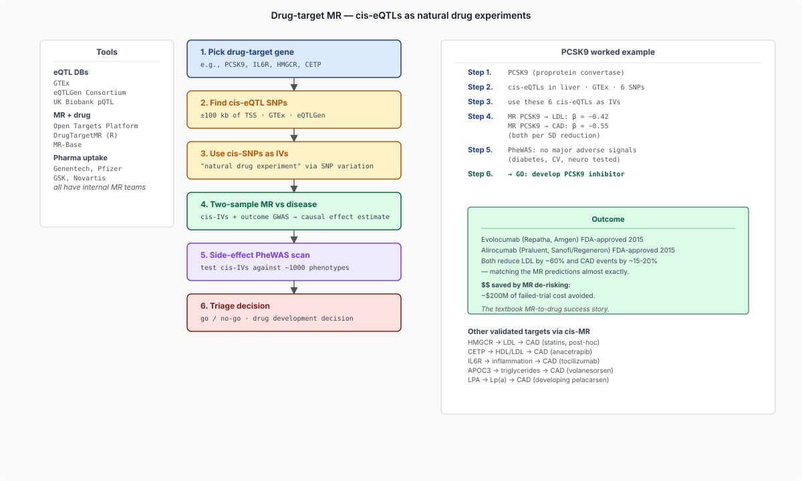
6.3 Famous examples
- PCSK9 → LDL → CAD: confirmed by MR; led to alirocumab / evolocumab (Repatha, Praluent, FDA-approved 2015).
- HMGCR → LDL → CAD: validated statins post-hoc; confirmed mechanism.
- CETP inhibitors: MR predicted modest CAD reduction; clinical trials confirmed (anacetrapib, REVEAL-trial 2017).
- IL-6 receptor → CAD: MR found protective effect; tocilizumab repurposing for cardiovascular disease in trials.
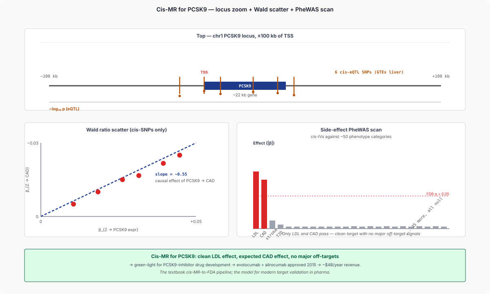
6.4 The 2024 frontier
- Drug-target PheWAS: scan all phenotypes for evidence of target's effect. Identifies on-target side effects before trials.
- Cell-type-specific MR: use tissue-specific eQTLs to test mechanism.
- Open Targets Platform: integrates MR + DepMap + drug screens for systematic target validation.
Part 7 · 15 min Beyond MR — Causal Inference at Scale
7.1 Difference-in-differences
Comparing exposed vs unexposed groups before vs after an intervention. Useful for natural experiments (policy changes, drug approvals). Limited use in genomics but common in epidemiology.
7.2 Regression discontinuity
If treatment is assigned by a threshold (e.g., genetic risk score above 95th percentile triggers screening), comparing just-above vs just-below provides quasi-randomisation.
7.3 Causal-DAG-based analysis
Pearl's do-calculus: formal framework for causal reasoning given a graph. Identifies which conditional independencies imply causal effects. In genomics: useful for designing observational analyses around explicit causal hypotheses.
7.4 Big-data methods
- Targeted-learning (TMLE): semi-parametric efficient estimators.
- Doubly-robust methods: estimators robust to mis-specification of either the exposure or outcome model.
- Causal forests (Athey 2019): heterogeneous-effect estimation.
These are emerging in genomics; standard in econometrics.
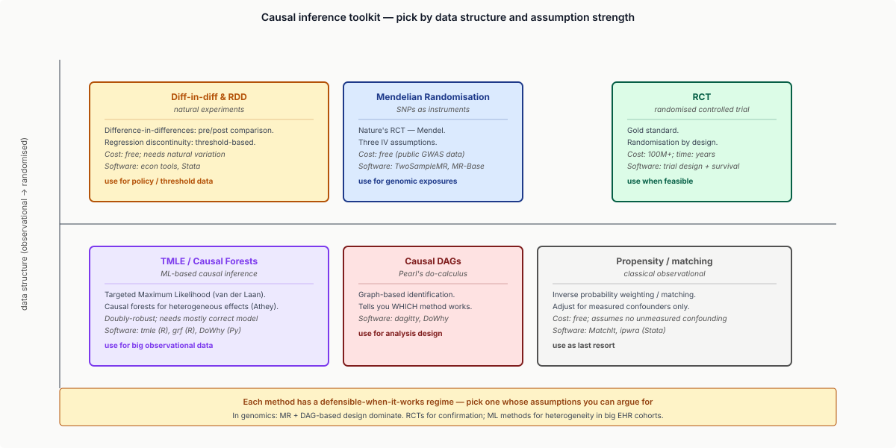
Wrap-up
What you should take away
- Association ≠ causation. Naive observational studies cannot establish causal direction; confounding is the rule, not the exception.
- MR uses germline SNPs as instrumental variables — Mendel's laws provide nature's randomisation.
- Three core IV assumptions: relevance, independence, exclusion. The third is the hardest; sensitivity analyses (MR-Egger, MR-PRESSO, weighted median) test for violations.
- Two-sample MR is the modern workhorse: combines GWAS summary stats from separate cohorts via inverse-variance-weighted regression.
- Mediation analysis decomposes effects into direct + indirect; combines naturally with MR for pathway dissection.
- Drug-target MR uses cis-SNPs near targets as natural experiments; pre-validates drug effects before RCTs.
- EE framings: causal effect as partial derivative under intervention; 2SLS as projection then OLS; IVW as weighted least squares; mediation as indirect-path decomposition.
Next lecture
CRISPR functional screens. MR establishes population-scale causal direction; CRISPR screens test cell-scale gene dependencies. Both inform drug-target validation; MR works on humans, CRISPR on cell lines.
Homework
- Pick a published two-sample MR study (e.g., LDL → CAD). Reproduce the IVW and MR-Egger estimates from public GWAS summary stats. Report convergence vs divergence.
- For one drug target of your choice (e.g., IL-6R, PCSK9), build a cis-MR analysis using GTEx eQTLs. Identify candidate diseases the target might affect.
- Implement the Wald estimator and IVW in Python. Test on synthetic data with known causal effect; verify recovery and bias under various pleiotropy levels.
- Use Steiger directionality test to investigate a controversial direction (e.g., depression → BMI vs BMI → depression). Report the answer.
- From an MR analysis with significant heterogeneity, run MR-PRESSO outlier detection. Identify the outlier SNPs; investigate whether they belong to a known pleiotropic pathway.
Recommended reading
- Davey Smith, G., & Ebrahim, S. (2003). 'Mendelian randomization': can genetic epidemiology contribute to understanding environmental determinants of disease? International Journal of Epidemiology 32, 1–22.
- Bowden, J., Davey Smith, G., & Burgess, S. (2015). Mendelian randomization with invalid instruments: effect estimation and bias detection through Egger regression. International Journal of Epidemiology 44, 512–525.
- Bowden, J., Davey Smith, G., Haycock, P. C., & Burgess, S. (2016). Consistent estimation in Mendelian randomization with some invalid instruments using a weighted median estimator. Genetic Epidemiology 40, 304–314.
- Verbanck, M., Chen, C. Y., Neale, B., & Do, R. (2018). Detection of widespread horizontal pleiotropy in causal relationships inferred from Mendelian randomization between complex traits and diseases. Nature Genetics 50, 693–698.
- Hemani, G., et al. (2017). The MR-Base platform supports systematic causal inference across the human phenome. eLife 7, e34408.
- Pearl, J. (2009). Causality: Models, Reasoning, and Inference, 2nd ed. Cambridge University Press.
- VanderWeele, T. J. (2015). Explanation in Causal Inference: Methods for Mediation and Interaction. Oxford University Press.
- Holmes, M. V., et al. (2017). Mendelian randomization in cardiometabolic disease: challenges in evaluating causality. Nature Reviews Cardiology 14, 577–590.
- MR-Base: mrbase.org
- TwoSampleMR R package: mrcieu.github.io/TwoSampleMR
- Open Targets Platform: platform.opentargets.org
Appendix — timing summary
| Block | Time | Cumulative |
|---|---|---|
| Part 1 — Causation vs Correlation in Genomics | 25 min | 0:25 |
| Part 2 — Instrumental Variables and 2SLS | 30 min | 0:55 |
| Part 3 — MR Methods and Sensitivity Analyses | 40 min | 1:35 |
| Part 4 — Mediation Analysis | 25 min | 2:00 |
| Part 5 — Limitations, Pitfalls, Best Practices | 25 min | 2:25 |
| Part 6 — Drug-Target Validation via MR | 20 min | 2:45 |
| Part 7 — Beyond MR: Causal Inference at Scale | 15 min | 3:00 |
| Wrap-up | 10 min | 3:10 |
Total: ~3h 10min of content.